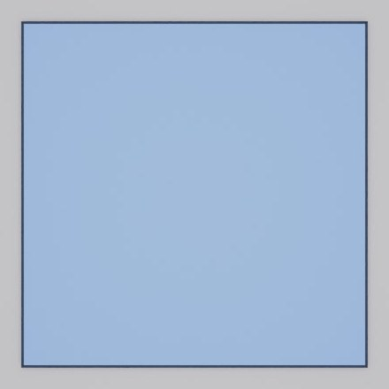
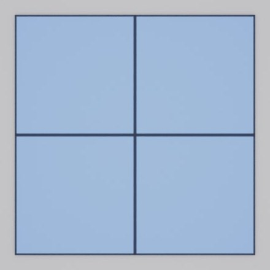
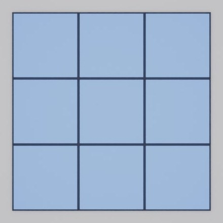

Bonus lesson
Subdivide
Subdivide adds resolution to a mesh by dividing faces or edges into smaller units. You find it in Edit Mode under Edge › Subdivide. What you get depends on which edges are selected.
1. One quad

2. Subdivide, 1 cut

3. Subdivide, 2 cuts

What gets divided
- When all four edges of a quad are selected, the face is subdivided into four smaller quads.
- When only one edge of a triangle or quad is selected, the face becomes a quad or an n-gon. If Create N-Gons is turned off, it is split into triangles instead.
- When two opposite edges of a quad are selected, the quad is divided into two quads.
- When all three edges of a triangle are selected, it is divided into four smaller triangles.
- When edges of an n-gon are selected, the edges are subdivided but the face itself stays undivided.
Options
These appear in the Adjust Last Operation panel after you run the operator.
- Number of Cuts: how many cuts to make per edge. The default of 1 cuts edges in half, and 2 cuts them into thirds.
- Smoothness: moves the new points to keep the approximate curvature, similar to the Subdivision Surface modifier.
- Create N-Gons: when off, forces triangles or quads.
- Quad Corner Type: how a quad is divided when two neighboring edges are selected. The choices are Inner Vertices, Path, Straight Cut and Fan.
- Fractal: moves the new vertices in random directions after subdividing.
Read the manual page on Subdivide.
Try it
This exercise is our own suggestion and has not been run step by step in the GUI. Add a plane, enter Edit Mode, select everything and choose Edge › Subdivide. Open the Adjust Last Operation panel and raise Number of Cuts to 2, then try Smoothness. Use Ctrl+Z to undo.